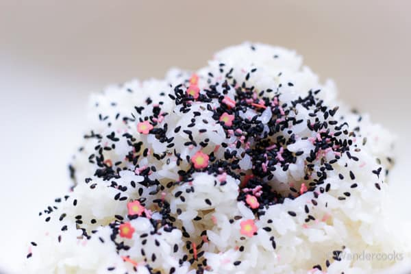

Onigiri

Description
Ingredients:
Steps:
- Cook the rice, then put into mix bowl
- Add the furikake and mix evenly
- Separate rice into equal portions
- Wet your hands with water and rub together with salt
- In your hands, make an indent on the rice
- Place ingredients inside and fold rice over
- Sqeeze into a triangle shape
- Place a slice of nori at the bottom, and fold upwards towards the middle